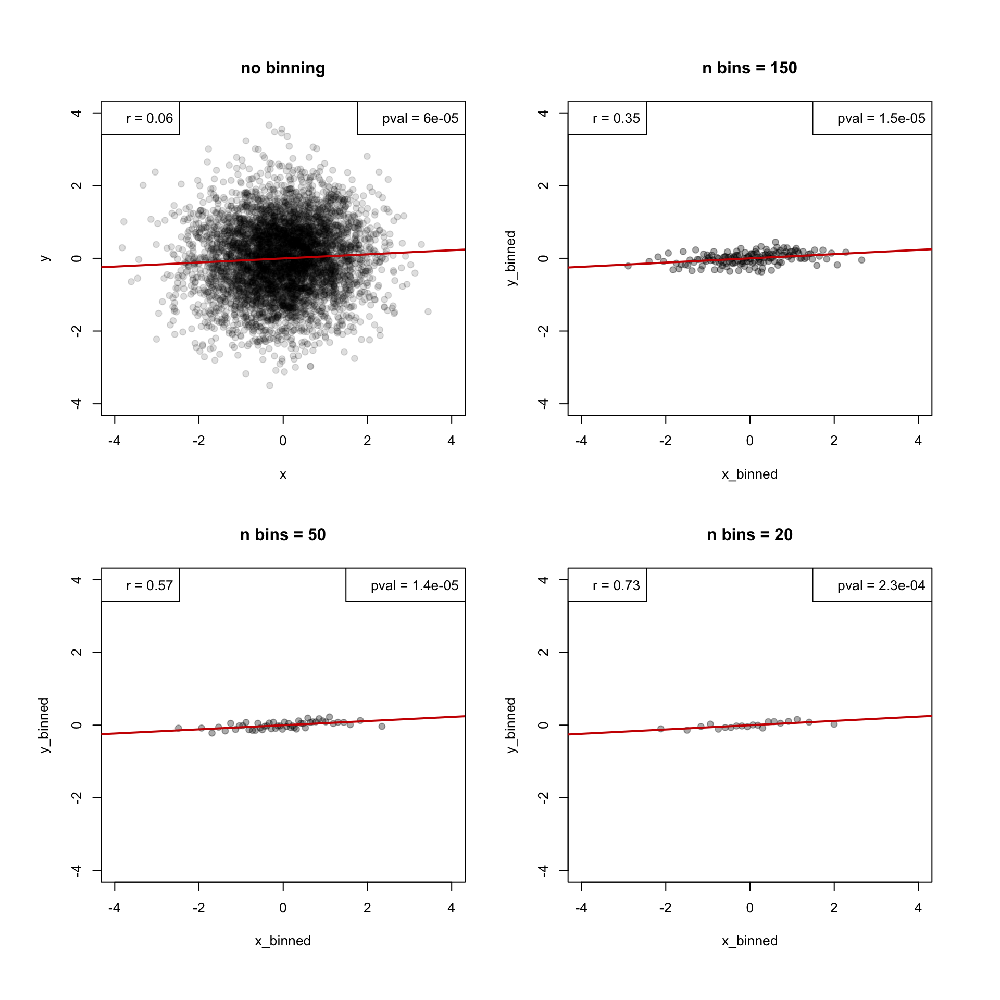

# set n
n <- 5000
# generate data
set.seed(285)
df <- data.frame(x = rnorm(n),
y = rnorm(n))
# order by x
df <- df[order(df$x),]# plot data
par(mfrow=c(1,1))
plot(y ~ x, data = df, main = "", pch=19, col = "#00000022", xlim = c(-4,4), ylim = c(-4,4))
legend("topleft", legend = paste("r =", round(cor(df$x,df$y),2)))
legend("topright", legend = paste("pval =", format(cor.test(df$x,df$y)$p.value, digits = 2, scientific = T)))
abline(lm(y ~x, data = df), col="red3", lwd=2)par(mfrow=c(2,2), oma=c(2,2,2,2))
# plot without binning
plot(y ~ x, data = df, main = "no binning", pch=19, col = "#00000022")
legend("topleft", legend = paste("r =", round(cor(df$x,df$y),2)))
legend("topright", legend = paste("pval =", format(cor.test(df$x,df$y)$p.value, digits = 2, scientific = T)))
abline(lm(y ~x, data = df), col="red3", lwd=2)
# iterate through different number of bins
for(n_bins in c(150,50,20)){
x_binned <- sapply(1:n_bins, FUN = function(i){ mean(df$x[((i-1)*(n/n_bins)+1):((i)*(n/n_bins))])})
y_binned <- sapply(1:n_bins, FUN = function(i){ mean(df$y[((i-1)*(n/n_bins)+1):((i)*(n/n_bins))])})
plot(x_binned, y_binned, main = paste("n bins =", n_bins), pch=19, col = "#00000055")
legend("topleft", legend = paste("r =", round(cor(x_binned,y_binned),2)))
legend("topright", legend = paste("pval =", format(cor.test(x_binned,y_binned)$p.value, digits = 2, scientific = T)))
abline(lm(y_binned ~ x_binned), col="red3", lwd=2)
}par(mfrow=c(2,2), oma=c(2,2,2,2))
# plot without binning
plot(y ~ x, data = df, main = "no binning", pch=19, col = "#00000022", xlim = c(-4,4), ylim = c(-4,4))
legend("topleft", legend = paste("r =", round(cor(df$x,df$y),2)))
legend("topright", legend = paste("pval =", format(cor.test(df$x,df$y)$p.value, digits = 2, scientific = T)))
abline(lm(y ~x, data = df), col="red3", lwd=2)
# iterate through different number of bins
for(n_bins in c(150,50,20)){
x_binned <- sapply(1:n_bins, FUN = function(i){ mean(df$x[((i-1)*(n/n_bins)+1):((i)*(n/n_bins))])})
y_binned <- sapply(1:n_bins, FUN = function(i){ mean(df$y[((i-1)*(n/n_bins)+1):((i)*(n/n_bins))])})
plot(x_binned, y_binned, main = paste("n bins =", n_bins), pch=19, col = "#00000055", xlim = c(-4,4), ylim = c(-4,4))
legend("topleft", legend = paste("r =", round(cor(x_binned,y_binned),2)))
legend("topright", legend = paste("pval =", format(cor.test(x_binned,y_binned)$p.value, digits = 2, scientific = T)))
abline(lm(y_binned ~ x_binned), col="red3", lwd=2)
}